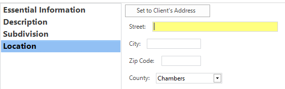

Survey Manager Documentation¶
The Survey Manager is a program for surveying firms which allows them to keep track and edit their survey jobs, billing items, and time entries. The main functionality (which everything is built around) is the ability to create and edit survey jobs.
Getting Started¶
This section will show you how to quickly get started with creating and editing survey jobs.
The first launch of the application may look something like this:

If the product is unlicensed, click the Activation button on the main ribbon and enter your product key. If the product key was valid, the application will be licensed and
all features will be enabled. If you don’t have a product key, email ethan.hann@protonmail.com to request one (either a trial key or a paid key).
After successfully licensing the application, the title bar will change to denote the product’s current status:

Click the
Newbutton under the Jobs group and enter a job number. This job number is plain text and can be anything you wish. Two different jobs cannot have the same job number.After the job has been created, the title bar (at the top) and the status bar (at the bottom) of the window will change to correspond to the current state of the application:
{kind=link}

Important: All changes to the currently opened job are only local, meaning they do not become persistently stored in the database until the Save button is clicked!
Once a job has been created, the next step is to edit it’s basic information and add objects to it. Click the Basic Information button under the Current Job group. This will open the
page that allows you to edit some basic information about the currently opened survey job. Simply fill out all of the fields that are required (marked with a red *). The currently selected
field is highlighted yellow to make navigation easier.

While most of the fields here are self-explanatory, the last sub-page (Location) has some extra functionality. If a Client object has been set (and the survey’s location is the same as the Client’s address), you
can click the Set to Client's Address button to automatically set the location for the job.
However, if no Client has been set, you will get a pop-up letting you know you must set a Client before you can use that feature. As of now, all addresses and locations are assumed to be in the state of Texas and only four Counties are supported: Chambers, Liberty, Harris, and Galveston.
{kind=link}